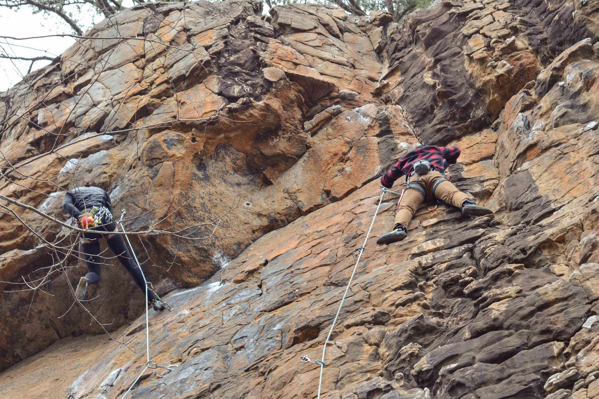

I've been playing Soccer for as long as I can remember. The sport has been a very important part of my life and is responsible in many ways in shaping the person I am today. I found some of my closest friends playing for my high school. Growing up in a country where high school education was extremely stressful and promoted rote-learning, it was very easy to burn out and lose motivation. Soccer was the thread that kept me hanging for 4 stressful years of high school.

I started climbing after coming to the United States. The absence of a footballing (Soccer) culture coupled
with my dwindling ability and willingness to do high-intensity cardio forced me to find a new sport. Climbing
filled that gap for me. It would be difficult for someone to find a more beginner-friendly sport. Every gym
has routes of varying difficulty for beginners to veteran climbers and the community is incredibly supportive.
No matter where you're climbing, you'll find a couple of people giving you tips and encouragement whenever
they see you struggling on a problem.
I am nowhere near as good at climbing as I was at Soccer, and still learning. I went climbing outdoors at Horseshoe
Canyon Ranch in Jasper, AR over spring break with the Purdue Climbing Club. It was an incredible learning experience.
I was told about the expectations and etiquettes of outdoor climbing. I learned lead climbing and
cleaning routes. It was near-freezing and the rocks were sharp. Camping in that weather with bleeding fingers and
bruised sides was miserable, but looking back, it was the most fun I'd had in a long time and I learned so much.
For most of high school, I primarily listened to classic rock music. As any fan of the genre will tell you, it is very guitar-centric. So it was natural for me to want to learn how to play the guitar.